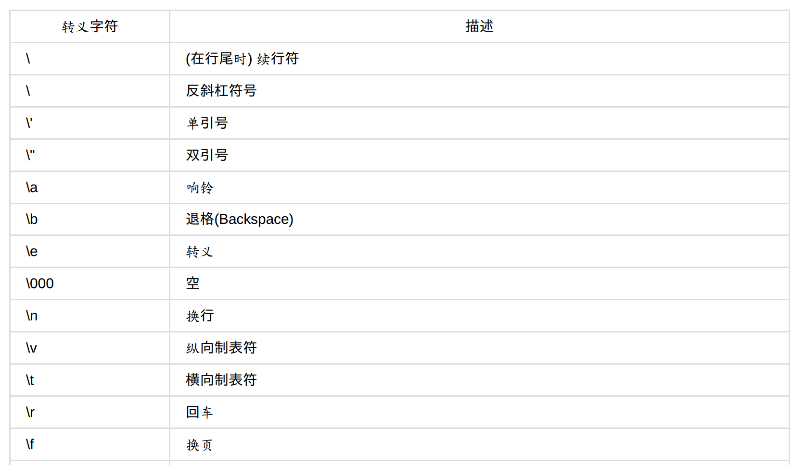
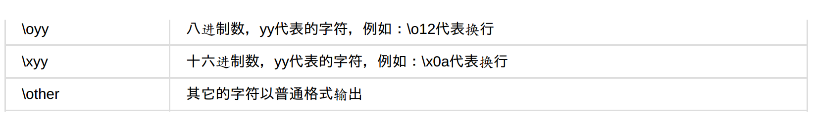

☰ 目录
02 开始编程
python属于脚本语言，它不需要编译。
第一段程序
毫无疑问，第一段程序都是 “Hello world”.
#coding:utf-8
'''
filename: hello.py
'''
print "Hello World."
除了在IDE中，也可以在终端输入以下命令运行：
python hello.py
编程模板
#coding:utf-8
'''
filename: cal.py
'''
a = 19+2*4 - 8/2
print a
变量
变量就是占位符
函数
- 变量名： 小写
- 文件名： 小写
- 函数名： 小写 + 下划线
#coding:utf-8
'''
filename:02_01.py
'''
def add_function(a, b):
c = a + b
print c
if __name__== "__main__":
add_function(2,3)
'''
output: 5
'''
字符串
1- 对于单引号和双引号混合的，两种方式：
>>> print "what \" they \" "
what " they "
>>> print 'what\'s your name?'
what's your name?
>>> print "what's your name?"
what's your name?
>>> print 'what "is your" name'
what "is your" name
2- 字符串相连：
>>> "py" + "thon"
'python'
以上是字符串相连最简单的方式，但是，如果字符串和数字相连：
>>> a = 10000
>>> b = "free"
>>> print b+a
Traceback (most recent call last):
File "<stdin>", line 1, in <module>
TypeError: cannot concatenate 'str' and 'int' objects
可用以下三种方法之一解决：
第一种和第三种方式相同。
repr() 是函数；
str 和 int 一样，是对象类型；
>>> print b + `a` # 1
free10000
>>> print b + str(a) #2
free10000
>>> print b + repr(a) #
free10000
转义字符


注意，两个斜杠表示一个斜杠：
>>> print "you can connect me by qq\\weibo\\gmail"
you can connect me by qq\weibo\gmail
占位符
常用的占位符如下：
%d: 整数
%s: 字符串
示例如下：
>>> print "value is %d" % a
value is 10000
如果有两个以上的占位符，就用 () 括起来：
使用占位符来连接两个字符串：
>>> print "%s%s" % (a, b)
python
1che
字符串的复制
“ = ”这个是深拷贝
a = "hello"
b = a
字符串的长度
剑客是以剑为武器的侠客；而键客是以键盘为武器的侠客。
a = "hello"
print len(a)
_len = len(a)